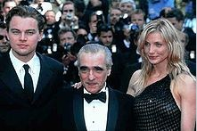
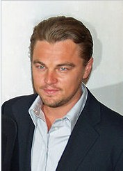
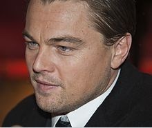
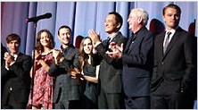
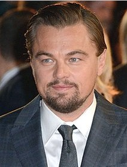
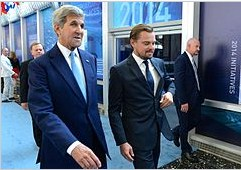
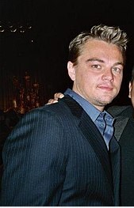

Early Life
Leonardo Wilhelm DiCaprio was born on November 11, 1974, in Los Angeles.[3] He is the only child of Irmelin (née
Indenbirken), a legal secretary, and George DiCaprio, an underground comix artist and producer and distributor
of comic books.[4] DiCaprio's father is of Italian (from Alife) and German (from Bavaria) descent.[5][6][7]
DiCaprio's maternal grandfather, Wilhelm Indenbirken, was German.[8] His maternal grandmother, Helene Indenbirken
(born Yelena Smirnova; 1915–2008),[9] was a Russian-born German citizen.[10][11] In an interview in Russia,
DiCaprio referred to himself as "half-Russian" and said that two of his late grandparents were Russian.[12]
DiCaprio's parents met while attending college and subsequently moved to Los Angeles, California.[5]
DiCaprio was named Leonardo because his pregnant mother was looking at a Leonardo da Vinci painting in the Uffizi
museum in Florence, Italy, when he first kicked.[13] His parents separated when he was a year old, and he
lived mostly with his mother.[14] The two lived in several Los Angeles neighborhoods, such as Echo Park and
Los Feliz (his Los Feliz residence was later converted into a public library), while his mother worked several
jobs.[5] DiCaprio attended Seeds Elementary School (now UCLA Lab School) and John Marshall High School a
few blocks away, after attending the Los Angeles Center for Enriched Studies for four years.[15] He dropped
out of high school following his third year, eventually earning his general equivalency diploma (GED).[16][17]
DiCaprio spent part of his childhood in Germany with his maternal grandparents, Wilhelm and Helene. He is
conversant in German and Italian.[18][19][20]
Career
1979–1990: Career beginnings
In 1979, DiCaprio was removed, at the age of five, from the set of the children's television series Romper Room
for being disruptive.[21][22] He began his career by appearing in several commercials and educational films,
following his older stepbrother Adam Farrar into television commercials, and landing an ad at age 14 for
Matchbox cars by Mattel, which he considered his first role.[21][23] Throughout his teens he was seen in
commercials for Kraft Foods, Bubble Yum, Apple Jacks, and many more.[24] In 1989, he played the role of Glen
in two episodes of the television show The New Lassie.[25][25]
In 1990, he started acting regularly on television. This started with a role in the pilot of The Outsiders, and
one episode of the soap opera Santa Barbara, playing the young Mason Capwell.[26][27] That same year, DiCaprio
got a break on television when he was cast in Parenthood. A series based on a successful comedy film by the
same name. His works that year earned him two nomination at the Young Artist Award in Best Young Actor in
a Daytime Series (Santa Barbara) and Best Young Actor Starring in a New Television Series (Parenthood).[28][29][30]
DiCaprio was also a celebrity contestant on the children's game show Fun House. One of the stunts he performed
on the show was going fishing in a small pool of water by catching the fish only with his teeth.[31][32]
1991–1996: Major projects and breakthrough
In 1991, he played an un-credited role in one episode of Roseanne.[33] Later that year, DiCaprio's debut film
role was in the comedic science fiction horror film Critters 3, in which he played the stepson of an evil
landlord, a role that DiCaprio described as "your average, no-depth, standard kid with blond hair."[34] Released
in March that year, the movie went direct-to-video.[34][35] Shortly after, he became a recurring cast member
on the successful ABC sitcom Growing Pains, playing Luke Brower, a homeless boy who is taken in by the Seaver
family.[36][21] DiCaprio was nominated for the Young Artist Award for Best Young Actor Co-starring in a Television
Series.[37]
In 1992, alongside Drew Barrymore, Sara Gilbert, Tom Skerritt, and Cheryl Ladd, he played a supporting role in
the first installment of the Poison Ivy film series. It was nominated for the 1992 Grand Jury prize of Best
Film at the Sundance Film Festival and received a nomination at the Independent Spirit Awards.[38] In 1992,
DiCaprio was handpicked by Robert De Niro out of 400 young actors to play the lead role in This Boy's Life
adapted from Tobias Wolff's memoir of the same name. He played opposite De Niro, who was acting as his stepfather,
and Ellen Barkin as his mother. The film was directed by Michael Caton-Jones and released in 1993.[21] In
1993, DiCaprio co-starred as the mentally handicapped brother of Johnny Depp's character in What's Eating
Gilbert Grape, a comic-tragic odyssey of a dysfunctional Iowa family. Director Lasse Hallström admitted he
was initially looking for a less good-looking actor but finally settled on DiCaprio as he had emerged as
"the most observant actor" among all who auditioned.[34] Budgeted at US$11 million,[39] the film became a
critical success, resulting in various accolades for DiCaprio, who was awarded the National Board of Review
Award and nominated for both an Academy Award and a Golden Globe Award for his portrayal. The New York Times
critic Janet Maslin praised DiCaprio's performance, writing "the film's real show-stopping turn comes from
Mr. DiCaprio, who makes Arnie's many tics so startling and vivid that at first he is difficult to watch.
The performance has a sharp, desperate intensity from beginning to end."[40]
DiCaprio's first effort of 1995 was Sam Raimi's The Quick and the Dead, a western film. Sony Pictures was dubious
over DiCaprio's casting, and as a result, co-star Sharon Stone decided to pay the actor's salary herself.[41]
The film was released to a dismal box office performance, barely grossing US$18.5 million in the US, and
received mixed reviews from critics.[42] He next starred in Agnieszka Holland' Total Eclipse, which he co-lead
with David Thewlis. The feature is a fictionalized account of the homosexual relationship between Arthur
Rimbaud (DiCaprio) and Paul Verlaine (Thewlis). He replaced River Phoenix, who died during pre-production
on the project.[43] A minor art-house success, the film grossed US$0.34 million throughout its domestic theatrical
run.[44] His last film of the year 1995 was The Basketball Diaries, co- starring Lorraine Bracco, James Madio,
and Mark Wahlberg. It is a biographical film, in which DiCaprio plays Jim Carroll in his teenage years as
a promising high school basketball player and writer who developed an addiction to heroin with his misguided
friends.[45] In 1996, DiCaprio appeared opposite Claire Danes in Baz Luhrmann's film Romeo + Juliet, an abridged
modernization of William Shakespeare's romantic tragedy of the same name, which retained the original Shakespearean
dialogue. The project achieved a worldwide box office take of $147 million.[46] Later that year, he starred
in Jerry Zaks' family drama Marvin's Room, reuniting with Robert De Niro. Based on Scott McPherson's screenplay
adaptation of his own 1991 stage play of the same name, the film revolves around two sisters, played by Meryl
Streep and Diane Keaton, who are reunited through tragedy after 17 years of estrangement.[47] DiCaprio portrayed
Hank, Streep's character's troubled son, who has been committed to a mental asylum for setting fire to his
mother's house.[48]
1997–2001: International stardom
In 1997, DiCaprio starred in James Cameron's Titanic (1997) as twenty-year-old Jack Dawson, a penniless Wisconsin
man who wins two tickets for the third-class on the ill-fated RMS Titanic. DiCaprio initially refused to
portray the character but was eventually encouraged to pursue the role by Cameron, who strongly believed
in his acting ability.[49] Against expectations, the film went on to become the highest-grossing film to
date (it was surpassed in 2010 by Cameron's film Avatar), grossing more than $1.84 billion in box-office
receipts worldwide,[50] and transformed DiCaprio into a commercial movie superstar, resulting in fan worship
among teenage girls and young women in general that became known as "Leo-Mania".[51] In May 1998, for example,
his face appeared on the covers of at least four teen magazines, and three books about DiCaprio were among
the top six paperbacks on The New York Times Best Seller list.[52] More than 200 fans contacted the Academy
of Motion Picture Arts and Sciences to protest him not being nominated for the 70th Academy Awards.[53] He
was nominated for other high-profile awards, including a second Golden Globe nomination. Upon the success
of Titanic, DiCaprio stated in 2000: "I have no connection with me during that whole Titanic phenomenon and
what my face became around the world ... I'll never reach that state of popularity again, and I don't expect
to. It's not something I'm going to try to achieve either."[54]
DiCaprio at a press conference for The Beach in February 2000
The following year, DiCaprio played a self-mocking role in a small appearance in Woody Allen's caustic satire
of the fame industry, Celebrity (1998). It features an ensemble cast that consists of Kenneth Branagh, Judy
Davis, Winona Ryder, Melanie Griffith, Joe Mantegna, Charlize Theron, Hank Azaria, Famke Janssen, Donald
Trump, etc.[55]
That year, he also starred in the dual roles of the villainous King Louis XIV and his secret, sympathetic twin
brother Philippe in Randall Wallace's The Man in the Iron Mask, based on the same-titled 1939 film. Despite
receiving a rather mixed to negative response,[56] the film became a box office success, grossing US$180
million internationally.[57] Though DiCaprio's performance was generally well-received, with Entertainment
Weekly critic Owen Gleiberman writing that "the shockingly androgynous DiCaprio looks barely old enough to
be playing anyone with hormones, but he's a fluid and instinctive actor, with the face of a mischievous angel,"[58]
he was awarded a Golden Raspberry Award for Worst Screen Couple for both incarnations the following year.[59]
DiCaprio's next project was the drama film The Beach (2000), an adaption of Alex Garland's 1996 novel of the
same name. He played an American backpacking tourist looking for the perfect way of life in a secret island
commune in the Gulf of Thailand. Budgeted at $ US 50 million, the film became a financial success, grossing
$ US 144 million worldwide,[60] but as with DiCaprio's previous project, the film was negatively reviewed
by critics.[61] Todd McCarthy of Variety noted that "Richard [DiCaprio's role] is too much the American Everyman
and not enough of a well-defined individual to entirely capture one's interest and imagination, and DiCaprio,
while perfectly watchable, does not endow him with the quirks or distinguishing marks to make this man from
nowhere a dimensional character."[62] The next year, he was nominated for another Razzie Award for his work
on the film.
In the mid 1990s, DiCaprio appeared in the mostly improvised short film called Don's Plum, as a favor to aspiring
director R. D. Robb.[21] When Robb decided to expand the black-and-white film to feature length, however,
DiCaprio and costar Tobey Maguire had its release blocked by court order, arguing that they never intended
to make it a theatrical release, as it would have commercial value thanks to their stardom.[21] The film
eventually premiered at the 2001 Berlin International Film Festival, where it was well received by critics.[63]
2002–2009: Continued success and producing
DiCaprio's first film of 2002 was in Martin Scorsese's Gangs of New York, a historical film set in the mid-19th
century in the Five Points district of New York City. Director Scorsese initially struggled selling his idea
of realizing the film until DiCaprio became interested in playing protagonist Amsterdam Vallon, a young leader
of the Irish faction, and thus, Miramax Films got involved with financing the project.[64] Nonetheless production
on the film was plagued by blown-out budgets and producer-director squabbles, resulting in a marathon eight-month
shoot and, at US$103 million, the most expensive film Scorsese had ever made.[64] Upon its release, Gangs
of New York became a financial and critical success.[65] DiCaprio's acting was well-received but was overshadowed
by Daniel Day-Lewis' performance among most critics.[66][67][68]
Also in 2002, DiCaprio appeared the biographical crime drama film Catch Me If You Can, based on the life of Frank
Abagnale Jr., who, before his 19th birthday, used his charm, confidence, and several different personas,
to make millions in the 1960s writing bad checks. Directed by Steven Spielberg, the film was shot in 147
different locations in only 52 days, making it "the most adventurous, super-charged movie-making" DiCaprio
had experienced yet.[69] Catch Me If You Can received favorable reviews and proved to be an international
success, becoming DiCaprio's highest-grossing film since Titanic with a total of US$351.1 million worldwide.[70]
Roger Ebert praised his performance, and noted that while "DiCaprio, who in recent films ... has played dark
and troubled characters, is breezy and charming here, playing a boy who discovers what he is good at, and
does it."[71] The following year, DiCaprio received his third Golden Globe nomination for his work in the
film.[72][73]

DiCaprio with Martin Scorsese and Cameron Diaz at
Gangs of New York
event circa 2002
In 2004 DiCaprio took his first producing task in Niels Mueller' The Assassination of Richard Nixon, as one of
the executives.[74] It stars Sean Penn, Don Cheadle, Jack Thompson and Naomi Watts, and is based on the story
of would-be assassin Samuel Byck, who plotted to kill Richard Nixon in 1974. It received a Un Certain Regard
nomination at the 2004 Cannes Film Festival. It won and was nominated for many Awards in the festival circuit.[75]
Forging a collaboration with Scorsese, the two paired again for a biopic of the eccentric and obsessive American
film director and aviation pioneer Howard Hughes in The Aviator (2004). Centering on Hughes' life from the
late 1920s to 1947, DiCaprio initially developed the project with Michael Mann, who decided against directing
it after working on back-to-back biopics; Ali and The Insider.[67] The actor eventually pitched John Logan's
script to Scorsese, who quickly signed on to direct. The Aviator became a critical and financial success.[76]
DiCaprio received rave reviews for his performance and won a Golden Globe Award for Best Actor, also receiving
another Academy Award nomination.[77][78]
In 2005, DiCaprio was made a commander of the Ordre des Arts et des Lettres by the French Minister of Culture
for his contributions to the arts.[79] The following year, the actor starred in both Blood Diamond and The
Departed. In Edward Zwick's war film Blood Diamond, he starred as a diamond smuggler from Rhodesia who is
involved in the Sierra Leone Civil War. The film itself received generally favorable reviews,[80] and DiCaprio
was praised for the authenticity of his South African Afrikaner accent, known as a difficult accent to imitate.[81]

DiCaprio at the red carpet at the 2007
Tribeca Film Festival
n Scorsese's The Departed he played the role of Billy Costigan, a state trooper working undercover in an Irish
Mob in Boston. Highly anticipated, the film was released to overwhelmingly positive reviews and became one
of the highest-rated wide release films of 2006.[82] Budgeted at US$90 million, it also emerged as DiCaprio
and Scorsese's highest-grossing collaboration to date, easily beating The Aviator's previous record of US$213.7
million.[83] DiCaprio's performance in The Departed was applauded by critics and earned him a Satellite Award
for Best Supporting Actor.[84] The same year, both the Golden Globes and the Screen Actors Guild nominated
DiCaprio twice in the Best Actor category for both of his 2006 features, and in addition, DiCaprio earned
his third Academy Award nomination for Blood Diamond.[85][86][87]
In 2007, DiCaprio produced Gardener of Eden directed by Kevin Connolly. It stars Lukas Haas, Erika Christensen
and Giovanni Ribisi. The film is about Adam Harris (Haas), a twenty-something college dropout lacking real
direction in his life. Adam's life changes dramatically when he accidentally captures a serial rapist. The
new-found attention inspires him to become a vigilante. Shortly after saw the release of The 11th Hour. A
documentary film which he created, produced, co-written and narrated. With contributions from over 50 politicians,
scientists, and environmental activists, including former Soviet leader Mikhail Gorbachev, physicist Stephen
Hawking, Nobel Prize winner Wangari Maathai, journalist Armand Betscher, and Paul Hawken, the film documents
the grave problems facing the planet's life systems. Global warming, deforestation, mass species extinction,
and depletion of the oceans' habitats are all addressed. The film's premise is that the future of humanity
is in jeopardy. The film proposes potential solutions to these problems by calling for restorative action
by the reshaping and rethinking of global human activity through technology, social responsibilityand conservation.
In 2008, DiCaprio starred in Body of Lies, a spy film based on the novel of the same name by David Ignatius,
set in context of the Middle East and the War on Terror, telling the story of three men battling a terrorist
organization, and each other.[88] Directed by Ridley Scott, DiCaprio dyed his hair brown and wore brown contacts
for the role, which he chose to pursue because he considered it a throwback to political films of the 1970s
such as The Parallax View (1974) and Three Days of the Condor (1975).[88] The film received mixed reviews
from critics,[89] and at a budget of US$67.5 million, became a moderate box office success, grossing US$115
million worldwide.[90] Later that year, DiCaprio reunited with Kate Winslet to film the drama Revolutionary
Road (2008), directed by Winslet's then-husband Sam Mendes. As both actors had been reluctant to make romantic
films similar to Titanic, it was Winslet who suggested that both should work with her on a film adaptation
of the 1961 novel of the same name by Richard Yates after reading the script by Justin Haythe, knowing that
plot had little in common with the 1997 blockbuster.[91] Once DiCaprio agreed to do the film, it went almost
immediately into production.[92] He noted that he saw his character as "unheroic" and "slightly cowardly"
and that he was "willing to be just a product of his environment."[93] Portraying a couple in a failing marriage
in the 1950s, DiCaprio and Winslet watched period videos promoting life in the suburbs to prepare themselves
for Revolutionary Road, which eventually earned them favorable reviews.[94] For his portrayal DiCaprio garnered
his seventh Golden Globes nomination.[95] Also in 2008, he was a creator and an executive producer for Greensburg
an American television series broadcast on the Planet Green television network. The show takes place in Greensburg,
Kansas, and is about rebuilding the town in a sustainable way after being hit by the May 2007 EF5 tornado.
He was a producer for the psychological horror thriller film Orphan directed by Jaume Collet-Serra. The film
stars Vera Farmiga, Peter Sarsgaard, Isabelle Fuhrman, C. C. H. Pounder and Jimmy Bennett. The plot centers
on a couple who, after the death of their unborn child, adopt a mysterious 9-year-old girl.

DiCaprio at the premiere of
Shutter Island at the 60th Berlin Film Festival in 2010
2010–present: Current works
DiCaprio continued his collaborative streak with Scorsese in the 2010 psychological thriller film Shutter Island
(2010), based on the 2003 novel of the same name by Dennis Lehane. He played U.S. Marshal Edward "Teddy"
Daniels, who is investigating a psychiatric facility located on an island and comes to question his own sanity.
The film grossed $294 million.[96] Also in 2010, DiCaprio starred in director Christopher Nolan's science-fiction
film Inception, also starring Marion Cotillard, Tom Hardy, Joseph Gordon-Levitt, Cillian Murphy, Ken Watanabe,
Tom Berenger and Michael Caine. Inspired by the experience of lucid dreaming and dream incubation,[97] DiCaprio
portrays the character of Dom Cobb, an "extractor" who enters the dreams of others to obtain information
that is otherwise inaccessible. Cobb is promised a chance to regain his old life in exchange for planting
an idea in a corporate target's mind.[98] DiCaprio was "intrigued by this concept—this dream-heist notion
and how this character's gonna unlock his dreamworld and ultimately affect his real life."[99] Released to
critical acclaim, the film grossed over $825 million worldwide.[100] To star in this film, DiCaprio agreed
to a pay cut from his $20 million fee, in favor of splitting first-dollar gross points, which means he receives
money coming directly off the top of ticket sales. This risk paid off, with DiCaprio earning $50 million
from the film to become his highest payday yet.[101] The movie went on to become Di Caprio's second highest-grossing
movie with $293 million at the box office, after Titanic with $659 million and ahead of The Revenant with
$184 million.[102]

In 2011, DiCaprio starred alongside Armie Hammer and Naomi Watts in Clint Eastwood's J. Edgar, a biopic about
J. Edgar Hoover.[103] Written by Dustin Lance Black, the film focuses on the career of the FBI director from
the Palmer Raids onwards, including an examination of his private life as an alleged closeted homosexual.[104]
Reviews towards the film were mostly mixed, with many critics commending DiCaprio's performance but feeling
that, overall, the film lacked coherence.[105] Roger Ebert praised DiCaprio's performance as a "fully-realized,
subtle and persuasive performance, hinting at more than Hoover ever revealed, perhaps even to himself."[106]
Also in 2011, he produced Catherine Hardwicke' Red Riding Hood. It's a romance horror film very loosely based
on the folk tale Little Red Riding Hood.[107] It stars Amanda Seyfried in the title role. Co-stars include
Gary Oldman, Billy Burke, Virginia Madsen, Shiloh Fernandez, etc. He was also an executive producer for The
Ides of March (2011), an American political drama film directed by George Clooney. The film is an adaptation
of Willimon's 2008 play Farragut North. It stars Ryan Gosling, George Clooney, Evan Rachel Wood, Philip Seymour
Hoffman, Marisa Tomei, Paul Giamatti, and Jeffrey Wright.
In 2012, DiCaprio starred as villainous Calvin Candie in Quentin Tarantino's spaghetti western, Django Unchained.[108]
While filming Django Unchained, DiCaprio accidentally cut his hand on glass, but continued filming despite
the injury, and Tarantino elected to use the take in the final movie.[109] The film received positive reviews
from critics[110] and earned DiCaprio his ninth nomination from the Golden Globes.[111] Django Unchained
grossed $424 million worldwide.[112]
DiCaprio's next film was The Great Gatsby, again with Baz Luhrmann (who directed him in Romeo + Juliet, 1996),
an adaptation of F. Scott Fitzgerald's 1925 novel, also starring Carey Mulligan, Joel Edgerton and Tobey
Maguire; the film was released on May 10, 2013.[113][114] It received mixed reviews from critics,[115] however
DiCaprio's portrayal as Jay Gatsby was praised. Critic Rafer Guzman of Newsday praised DiCaprio by stating,
"As for Leonardo DiCaprio, he is now the Gatsby to beat. Despite a borderline comedic entrance – haloed by
fireworks and accompanied by Gershwin's "Rhapsody in Blue"—DiCaprio nails this maddeningly enigmatic character.
He's as tough as Alan Ladd in '49, as suave as Redford in '74, but also vulnerable, touching, funny, a faker,
a human. You hear it all in Gatsby's favorite phrase, "old sport," a verbal tic that stumped other actors.
It's a tremendous, hard-won performance."[116] Matt Zoller Seitz of Roger Ebert.com described his performance
as Gatsby as "The movie's greatest and simplest special effect," and states "This is an iconic performance—maybe
his career best."[117] The film grossed $348 million worldwide[118] and became Luhrmann's highest-grossing
film.[119]
DiCaprio reunited with Scorsese for the fifth time in The Wolf of Wall Street, a film based on the life of stockbroker
Jordan Belfort, who was arrested in the late 1990s for securities fraud and money laundering.[120][121] Filming
began on August 8, 2012, in New York,[122] and the film was released on December 25, 2013.[123] The role
earned him a Golden Globe Award for Best Actor in a Musical or Comedy[124] and his fourth Academy Award nomination
for acting. He was also nominated the same year for producing as the film was nominated for Best Picture.
In January 2013, DiCaprio said he was going to take a long break from acting and would "fly around the world
doing good for the environment."[125]

DiCaprio at the London premiere of
The Wolf of Wall Street in 2014
Also in 2013 he produced the crime thriller film, Brad Furman's Runner Runner. It stars Justin Timberlake, Ben
Affleck, Gemma Arterton and Anthony Mackie. Some parts of this narrative are based on the life of Nat Arem,[126]
a professional poker player and former accountant at Deloitte Touche who helped uncover cheating[127] in
online poker by using statistical methods[128] to analyze thousands of games. Shortly after he produced Out
of the Furnace (2013), the film stars Christian Bale, Casey Affleck, Woody Harrelson, Zoe Saldana, Forest
Whitaker, Willem Dafoe, and Sam Shepard. The film is about a Pennsylvania steel mill worker Russell Baze
(Bale) and his Iraq War veteran brother Rodney (Affleck), who cannot adjust to civilian life. While Rodney
makes some money doing bareknuckle fights for bar owner and small-time criminal John Petty (Dafoe), who runs
illegal gambling operations, Rodney becomes so indebted due to his own gambling losses that he begs Petty
to let him do a big money fight. After Petty reluctantly arranges for Rodney to do a fight for a ruthless
criminal gang in the backwoods, Rodney disappears, and his brother tries to find out what has happened to
him.
He was an executive producer on Virunga a 2014 British documentary film directed by Orlando von Einsiedel. It
focuses on the conservation work of park rangers within the Congo's Virunga National Park during the rise
of the violent M23 Rebellion in 2012 and investigates the activity of the British oil company Soco International
within the UNESCO World Heritage site.[129] Soco International ended up officially exploring oil opportunities
in Virunga in April 2014.[130] The film premiered at the Tribeca Film Festival on April 17, 2014. After airing
on Netflix, it was nominated for an Academy Award for Best Documentary Feature. Cowspiracy: The Sustainability
Secret is a 2014 documentary film for which he was also an executive producer. It explores the impact of
animal agriculture on the environment, and investigates the policies of environmental organizations on this
issue. The film looks at various environmental concerns, including global warming, water use, deforestation,
and ocean dead zones, and suggests that animal agriculture is the primary source of environmental destruction.
In 2015, DiCaprio played fur trapper Hugh Glass in the survival drama The Revenant, directed by Alejandro G.
Iñárritu.[131] The film was well received by critics[132] and DiCaprio's performance garnered universal acclaim[133][134]
that earned him numerous awards, including his first Academy Awards win for Best Actor,[135][136] his eleventh
nomination and third Golden Globe win; winning for Best Actor Drama, and his first BAFTA, SAG and Critic's
Choice Award win all for Best Actor.[137] Also in 2015, he was an executive producer for Catching the Sun,
a documentary film on the growth of the solar power industry that premiered on Netflix in April 2016.[138]
Directed by Shalini Kantayya, the film features portraits of diverse personalities and their roles in the
transition to solar power. Unemployed workers in Richmond, California, businessmen in China, Tea Party activists,
and a would-be White House advisor are all featured in the film. The film takes the position that clean energy
does not require sacrificing economic prosperity.
He started 2016 by being an executive producer for The Ivory Game, a documentary film. The film examines the
ivory trade, which has become a global concern, pitting governments and environmental preservationists against
poachers and Chinese ivory merchants.[139] That same year he was one of the producer, hosted, and narrated
the documentary Before the Flood about climate change directed by Fisher Stevens. The film shows DiCaprio
visiting various regions of the globe[140] exploring the impact of man-made global warming.[141] As a narrator,
DiCaprio comments these encounters as well as archive footage. Also in 2016, Live by Night was produced by
DiCaprio. A crime drama film written, directed, produced by and starring Ben Affleck. Based on the 2012 novel
of the same name by Dennis Lehane, the film follows an Ybor City bootlegger (Affleck) who becomes a notorious
gangster. The film also stars Elle Fanning, Brendan Gleeson, Chris Messina, Sienna Miller, Zoe Saldana and
Chris Cooper. In 2018, he produced Delirium, a psychological horror film directed by Dennis Iliadis. It stars
Topher Grace, Patricia Clarkson, Callan Mulvey and Genesis Rodriguez. The film is about a man (Grace) who
inherits a mansion from his deceased wealthy father after being released from a mental institution. Strange
events lead him to wonder if the house is haunted or if his mind is playing tricks on him. In 2019, DiCaprio
will star as Rick Dalton, an aging TV actor, in Quentin Tarantino's upcoming film Once Upon a Time in Hollywood
about the Manson Family murders.[142]
Works in development
On August 10, 2015, it was announced that Martin Scorsese will direct an adaptation of Erik Larson's The Devil
in the White City, which will star DiCaprio with a screenplay to be written by Billy Ray.[143] In 2017, Paramount
announced that it has acquired the movie rights for an English language adaptation of The Black Hand.[144]
The new film, due for release in 2020, will star DiCaprio as Joe Petrosino, and will be partly based on Stephan
Talty's novelization of Petrosino's assassination.[145][146] In August 2017, Paramount won a bidding war
against Universal Pictures for the rights to adapt Walter Isaacson's biography of Leonardo da Vinci. The
studio bought the rights under its deal with DiCaprio's Appian Way Productions, which said that it planned
to produce the film with DiCaprio as the star.[147][148] As of September 2018, DiCaprio is set to star in
Roosevelt, a biopic of former U.S. President Theodore Roosevelt; Martin Scorsese will direct and Paramount
Pictures will distribute, with DiCaprio's Appian Way producing.[149] The film does not yet have a release
date. In October 2018, he was cast in the Martin Scorsese-directed film adaptation of the David Grann's New
York Times bestseller book Killers of the Flower Moon.[150][151]
Personal Life
On August 10, 2015, it was announced that Martin Scorsese will direct an adaptation of Erik Larson's The Devil
in the White City, which will star DiCaprio with a screenplay to be written by Billy Ray.[143] In 2017, Paramount
announced that it has acquired the movie rights for an English language adaptation of The Black Hand.[144]
The new film, due for release in 2020, will star DiCaprio as Joe Petrosino, and will be partly based on Stephan
Talty's novelization of Petrosino's assassination.[145][146] In August 2017, Paramount won a bidding war
against Universal Pictures for the rights to adapt Walter Isaacson's biography of Leonardo da Vinci. The
studio bought the rights under its deal with DiCaprio's Appian Way Productions, which said that it planned
to produce the film with DiCaprio as the star.[147][148] As of September 2018, DiCaprio is set to star in
Roosevelt, a biopic of former U.S. President Theodore Roosevelt; Martin Scorsese will direct and Paramount
Pictures will distribute, with DiCaprio's Appian Way producing.[149] The film does not yet have a release
date. In October 2018, he was cast in the Martin Scorsese-directed film adaptation of the David Grann's New
York Times bestseller book Killers of the Flower Moon.[150][151]
During the 2004 presidential election, DiCaprio campaigned and donated to John Kerry's presidential bid. The
FEC showed that DiCaprio gave $2,300 to Barack Obama's presidential campaign in the 2008 election, the maximum
contribution an individual could give in that election cycle, and $5,000 to Obama's 2012 campaign.[164] In
June 2017, DiCaprio returned an Oscar won by Marlon Brando, together with other artifacts he received from
business associates at Red Granite Pictures as his 38th birthday gift, to the US government amid an investigation
into the 1Malaysia Development Berhad scandal.[165][166][167]
Other Works
Environmental activism

U.S. Secretary of State
John Kerry and DiCaprio at the Our Ocean Conference at the
U.S. Department of State in September 2016
Following the success of Titanic in 1997 along with earlier films, 24-year-old DiCaprio established the Leonardo
DiCaprio Foundation in 1998, a non-profit organization devoted to promoting environmental awareness.[168]
Although concerned with all areas of the environment, it focuses on global warming, preserving Earth's biodiversity
and supporting renewable energy. It has worked on projects in over 40 countries and has produced two short
web documentaries, Water Planet and Global Warning.[169] The foundation has also funded debt-for-nature swaps.[170][171]
Because of his active involvement in those causes, he has received praise from environmental groups.[172]
Among the accolades received were the Martin Litton Environment Award, in 2001, from Environment Now, and
the Environmental Leadership Award in 2003 from Global Green USA.[173] He has been an active supporter of
numerous environmental organizations and has sat on the board of the World Wildlife Fund, Global Green USA,
International Fund for Animal Welfare and the Natural Resources Defense Council.[169][174]
DiCaprio is a vegetarian,[175] rumored to even be vegan,[176] and in 2014 he backed the documentary Cowspiracy
about the impact of animal agriculture on the environment and the positions of several environmental organizations
on the issue.[177] By taking the role of executive producer, DiCaprio helped the documentary get released
on Netflix.[178][179] DiCaprio has owned environment-friendly electric-hybrid vehicles[180] and his home
is powered by solar panels,[172] although his use of private jets and large yachts has attracted criticism
due to their large carbon footprints.[181][182] DiCaprio states that global warming is the world's "number-one
environmental challenge".[183] DiCaprio chaired the national Earth Day celebration in 2000, where he interviewed
President Bill Clinton and they discussed plans to deal with global warming and the environment.[184] In
2007 he had a major role in The 11th Hour, a documentary about people's relationship to nature and global
warming. He co-produced, co-wrote and narrated the film.[184] From a benefit "11th Hour" fine art auction
he organized in 2013, he has raised nearly $40 million towards his foundation. He told attendees, "Bid as
if the fate of the planet depended on us."[185] It became the world's highest-grossing environmental charity
event ever held.[186]
At the 2007 Oscar ceremony, DiCaprio and former Vice President Al Gore appeared to announce that the Academy
Awards had incorporated environmentally intelligent practices in its production. He presented at the 2007
American leg of Live Earth, and in 2010 his environmental work earned DiCaprio a nomination for the VH1 Do
Something Award, honoring people who do good.[187] In November 2010, DiCaprio donated $1 million to the Wildlife
Conservation Society at Russia's tiger summit. DiCaprio's persistence in reaching the event after encountering
two plane delays caused then Prime Minister Vladimir Putin to describe him as a "muzhik" or "real man".[188][189]
In 2011, DiCaprio joined the Animal Legal Defense Fund's campaign to free Tony, a tiger who has spent the
last decade at the Tiger Truck Stop in Grosse Tête, Louisiana.[190] In 2014 he was appointed as a United
Nations representative on climate change, and later that year he made an opening statement to members of
the UN Climate Summit.[191][192] He again spoke at the UN in April 2016 prior to the signing of Paris Climate
Change Agreement.[193]
In early 2016, at a meeting with Pope Francis, he gave a charity donation and spoke about environmental issues.
A few days later, possibly influenced by his meeting with DiCaprio, the Pope said he would act in a planned
faith-based charity film, Beyond the Sun. It would be his first acting experience, and would also be the
first time in history that a Pope appeared in a feature film. Profits from the film would be given to charities
in Argentina.[194] In July 2016, his foundation awarded $15.6 million to help protect wildlife and the rights
of Native Americans, along with combating climate change.[195] In July 2017, a charity auction and celebrity
concert put on by the foundation had raised over $30 million in its opening days and was set to continue
the following month.[196] In October 2016, DiCaprio joined forces with Mark Ruffalo in North Dakota in support
of the Standing Rock tribe's opposition to the Dakota Access Pipeline. He traveled to Indonesia in early
2016 where he criticized the government's palm oil industry's slash-and-burn forest clearing methods.[197][198]
That same year, he executive-produced and appeared in Before the Flood, a 2016 documentary film examining
various aspects of global warming.[199] In accepting his Best Actor award at the 2016 Oscars ceremony, DiCaprio
stated:
Climate change is real, it is happening right now. It is the most urgent threat facing our entire species, and
we need to work collectively together and stop procrastinating. We need to support leaders around the world
who do not speak for the big polluters, but who speak for all of humanity, for the indigenous people of the
world, for the billions and billions of underprivileged people out there who would be most affected by this.
For our children's children, and for those people out there whose voices have been drowned out by the politics
of greed.[200]
In April 2017, he promoted and protested President Trump's inaction on climate change by attending the 2017 People's
Climate March.[201][202] Leonardo DiCaprio is identified as one of the most active celebrities in the climate
change movement. Not only did he highlight the topic at the Oscars but he is a constant source of information
on the matter.[203] Many political figures welcome high-profile influencers such actors as Leonardo DiCaprio
or artists to address political causes, environmental or not, "because of the high recognition that celebrities
have", states Eric T. Kasper, an associate professor of political science. He claims that much of the public
feel a personal connection to the stars after experiencing emotion from them in so many different ways on
the big screens. [204] While budgets in the science and technology sector are declining as well as interest
in newspapers and scientific journal series, it is important to have more familiar faces and voices such
of those from celebrities to represent the importance of subjects such as climate change.[205]
Philanthropy
n 1998, DiCaprio and his mother donated $35,000 for a "Leonardo DiCaprio Computer Center" at the Los Feliz branch
of the Los Angeles Public Library, the site of his childhood home. It was rebuilt after the 1994 Northridge
earthquake and opened in early 1999.[206] During the filming of Blood Diamond, DiCaprio worked with 24 orphaned
children from the SOS Children's Village in Maputo, Mozambique, and was said to be extremely touched by his
interactions with the children.[207] In 2010, he donated $1 million to relief efforts in Haiti after the
earthquake.[208] In April 2013, DiCaprio donated $61,000 to GLAAD, an organization which promotes the image
of LGBT people in the media.[209] In 2016 Leonardo DiCaprio took part in an annual fundraising gala event
of Children of Armenia Fund, as a special guest of his close friend and gala’s honorary chair Tony Shafrazi.
DiCaprio contributing $65,000 to the cause.[210] After Hurricane Harvey in 2017, Leonardo DiCaprio provided
$1 million to the United Way Harvey Recovery Fund through his foundation.[211]

DiCaprio at a charity event in March 2009